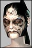

| Author | Thread |
Cronost
Soleet
 Registered: Apr 2002
Posts: 48 |  "Ninja" Looting. "Ninja" Looting.Well, I think you'll all agree, distribution Nodrop is da sux. 
Tonight we lost 2 Pain of Patricia, because during few sec the loot was released, and someone flew next to the corpse and took them...
Well, since FC seems incompetent to fix things, here's 2 "solutions" I found.
1) Delete the Nodrop flag. This had been discussed several times, that may ruins the "economy" of RK, etc... but it's a potential fix. ( Or at least delete the flag of the items dropped by the bosses/uniques. ) Definitively a discutable solution.
2) Add a small period of time during which you can trade the items. Lemme explain.
Let's say you just killed Morgan Lafaye, and she dropped a QL 200 torturing tool. ( woot  ) You might be able to trade it during the next 60 seconds, and after this period, the tool might become Nodrop. And/Or, once traded, it might instantly become Nodrop.
I personally prefer the 2nd solution.
Feel free to comment, flame me, or post your apologize for having wasted 2 hours of game for 20 players.
While i'm at it...
The "Damage wiping" code when someone leave the team is totally ****ed.
Here's another fix I thought to :
Don't wipe the damage if all the teamed players are in the same level range. 
Easy huh ?
Regards, |
Obit
Phear Leet
 Registered: Nov 2001
Posts: 151 | Bumping this.. They should also make loot messages in vicinity, to identify ninjalooters or backstabbers.
We also lost an azure piece from nelly today due to the corpse poofing before the officers had decided who should get it. |
Turin
Supa Leet
 Registered: Feb 2002
Posts: 775 | Pleae post the names of the loosers in here so that we know who they are, and we can sully there good name on RK1 |
Wildwal
Supa Leet
 Registered: Nov 2001
Posts: 301 | god thats lame, they really need to do something about it
perhaps make the loot drop in a container, like the agent hood, and it dissolves after an hour if not right clicked and opened
something must be done though, and soon
who was it? |
Cronost
Soleet
Registered: Apr 2002
Posts: 48 | Well, I don't really want to post her name 'till i'm sure she ninjaed... But I know we'll never know.
When that happened, while everyone were killing Nelly, I talked to her. She told me she hadn't ninjaed anything, and that she went close to the body coz he pushed the "0" key by mistake. ( Just imagine the scene... 1 Remains, 2 peeps in the middle, 20ish other players in circle around the remains, then suddently a golden yalm land near the remains and 3sec after, take off and fly away. )
I'm still pissed. |
Wildwal
Supa Leet
Registered: Nov 2001
Posts: 301 | ask her if she agrees to have a gm scan her acct for the items to clear their name, do it quick and they can tell if she deleted or anything, good way to verify, and then we can all know for sure, we had to do that once before at tara :/
theres no real excuse for anyone to be near a body once its down, kinda sad problems like these even have to be faced |
Nargil
Phear Leet
 Registered: Mar 2002
Posts: 97 | hm the second solution still can **** the economy... or can be dangerous if someone LD...
i have a third one... if someone loot, and someone else try to loot
the first looter can have a msg with the name and can choose to autorize the second guy who try to loot to have the loot...
i don t know if i explain well but lets do an example
Cronost loot Patricia J. : he see a pain of p. nodrop
Mareva try to loot while cronost got the loot : he have a pop saying i try to loot and he can say no/yes if no he keep the loot if yes he loose loot and i got it...
It can be boring in mission so u can put a flag "instantly say no"
and if u have to go away from the remains (can t stay near) : u can "lock the loot" or unlock it when it is locked, if u do that, when u click on the corps u ll see
Remains of ... and under (like a guild name) Locked by Cronost
Why having a flag saying who locked ? prevent a ninja looter to keep a loot for him...
That s my ideas
and u can do a mix of the two ideas
Locked loot : someone else try to loot, owner have a msg and can autorize or not...
Will prevent some ninja loot at T. or uniques like that... |
sarangas
Phear Leet
 Registered: Apr 2002
Posts: 69 | I know one alt who did this and is still doing it and braggs about it in nc.I"m not gonna say who on the board,but he was omni and a high lvl alt.Thought it was hilarious by the way he was going on.I just cant drop dimes on people...for any reason.Besides how could it be proven. |
Intone
Soleet
 Registered: Nov 2001
Posts: 26 | Simple /loot pass (to targeted char) command would be just fine. |
Ashuras
Supa LeetRegistered: Nov 2001
Posts: 394 | Caginou, your idea is a damm good one.
Intone, it works just like the "/loot pass" u've suggested, except that is initated by the "target" of your suggestion.
FC should seriously take this suggestion into consideration... |
Arinova
Supa Leet
 Registered: Jan 2002
Posts: 118 | "Ninja Looter"
Bump!
 Last edited by Vitalangel on January 2nd, 2003 at 14:23 |
Sepaku
Leetas
 Registered: Nov 2002
Posts: 39 | They should make Ninja looting a bannable offense.
They now have the CS tool to reimburse lost items, so they should be able to track items.
Make sure that they announce it on the start up screen, so no one can say "I didnt know".
Cheers
Sepaku |
Hajkster
Supa LeetRegistered: Mar 2002
Posts: 831 | quote:
Originally posted by Sepaku
They should make Ninja looting a bannable offense.
They now have the CS tool to reimburse lost items, so they should be able to track items.
Make sure that they announce it on the start up screen, so no one can say "I didnt know".
Cheers
Sepaku
Bann people for ninjaing?.. Isn't that as greedy as ninjaing? |
Sepaku
Leetas
Registered: Nov 2002
Posts: 39 | Looting someone elses kill ....is stealing imo. I think people should be banned for it. If they did not kill the mob or were not part of a raid that killed the mob ....they dont deserve the loot. I say ban "ninja looters".
Hajkster ....How is wanting ninjas banned greedy?
Cheers
Sepaku
131 Atrox Fixer |
Numbfreeze
Supa Leet
 Registered: Mar 2002
Posts: 35 | I'm unclear on how you can loot someone else's kill. I thought that was restricted to the person who got the kill or team members, depending on loot order. |
Sepaku
Leetas
Registered: Nov 2002
Posts: 39 | A mob becomes available for all to loot after a short time. Those who made kill maybe deciding loot or still fighting other mobs. This enables thieves aka "Ninjas" to come up and steal loot.
Sep |
Jannerik
LeetasRegistered: Dec 2001
Posts: 64 | Easiest solution : 1. Show the loot of bosses & uniques in the vicinity + 2. All non-drops can be looted + traded as a disabled item (for example those santa-hats have been "vaccum packed", once you click it it becomes useable / non-drop)
*bumpage* |
All times are GMT.


 Last Thread Next Thread
Last Thread Next Thread 
 December 20th, 2002 22:43
December 20th, 2002 22:43